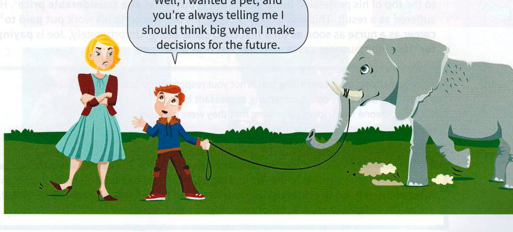

Bài tập
23.1 Trả lời các câu hỏi sau.
- Trong thành ngữ nào từ small có nghĩa là to/lớn? (gợi ý: tiền bạc)
- Trong thành ngữ nào từ big thực sự mang nghĩa nhỏ/không quan trọng? (gợi ý: không mấy ấn tượng)
- Thành ngữ nào có nghĩa là một người thú vị/đặc biệt hơn người bình thường?
- Thành ngữ nào đi với từ big mang nghĩa trở nên nổi tiếng?
23.2 Sử dụng một thành ngữ trong mỗi câu để tóm tắt tình huống.
-
Maria không lắng nghe những gì Eddie đang nói. Tâm trí cô ấy đang để ở nơi khác.
Maria is ............................................................................................................................ . -
Có những chiếc ghế lớn và ghế nhỏ, ghế bành, ghế sân vườn và ghế văn phòng.
Chairs are sold in ................................................................................................................ . -
Trường học cũ của chúng tôi tối tăm và u ám. Trường học mới thì sáng sủa và dễ chịu.
The new school is a .......................................................................................................... . -
Dan nhìn Eva với ánh mắt lãng mạn. Cậu ấy luôn muốn ngồi cạnh cô ấy, và luôn muốn nói về cô ấy.
You can see he's in love. It .................................................................................................... .
Hoặc: He's in love. You can see/spot it ............................................................................................ .
23.3 Hoàn thành các thành ngữ sau.
- Tuần tới cô ấy tròn 40 tuổi, nhưng cô ấy không muốn ....................................................................................... . Cô ấy thà đi ăn ngoài với chồng hơn là tổ chức một bữa tiệc lớn với nhiều người.
- Với bất kỳ ai đang làm công việc tạm thời, khả năng thất nghiệp .................................................................................................................................. , đặc biệt là trong thời kỳ suy thoái kinh tế.
- Các công đoàn đã sẵn sàng thảo luận về vấn đề này, nhưng phía người sử dụng lao động không chịu ....................................................................................... . Họ nói rằng họ đã đưa ra đề nghị cuối cùng, và thế là hết.
- Chúng tôi sẽ có sếp mới bắt đầu từ tuần tới. Ông ấy có phần .................................................................................... – chưa có ai gặp hay biết nhiều về ông ấy.
- Tôi thích có bạn bè đến ở lại căn hộ của mình, nhưng chỉ trong vài ngày thôi. Nhìn chung, bạn bè chỉ tốt ....................................................................................... ; nếu họ ở lại quá lâu, họ luôn làm tôi khó chịu.
- Chúng ta nên nghĩ ....................................................................................... khi lập kế hoạch cho trang web mới. Chẳng có ích gì khi chỉ có một trang đơn điệu; chúng ta nên có nhiều liên kết và video clip, càng nhiều hình ảnh màu sắc càng tốt, và cả âm thanh nữa.
23.4 Sử dụng từ điển để tra nghĩa của các thành ngữ này và sau đó viết một câu cho mỗi thành ngữ.
the middle ground
the middle of nowhere
be caught in the middle
